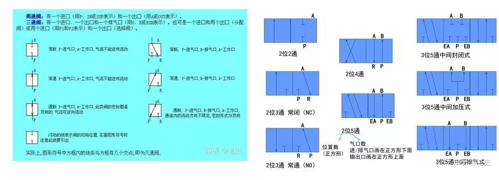
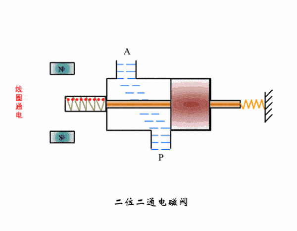
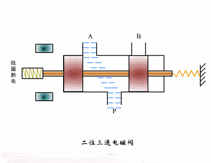
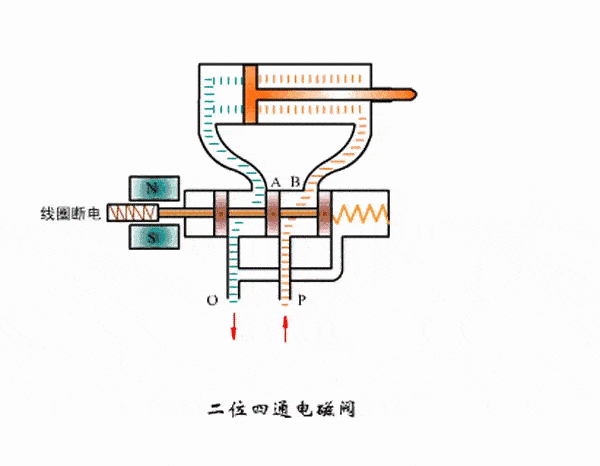
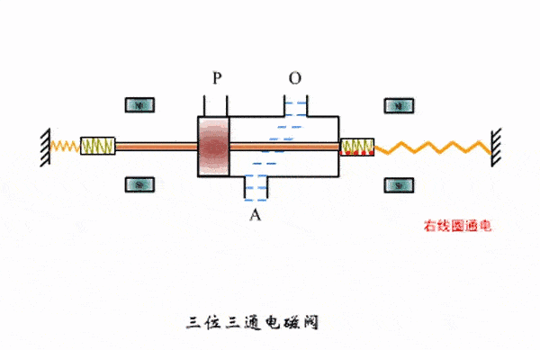
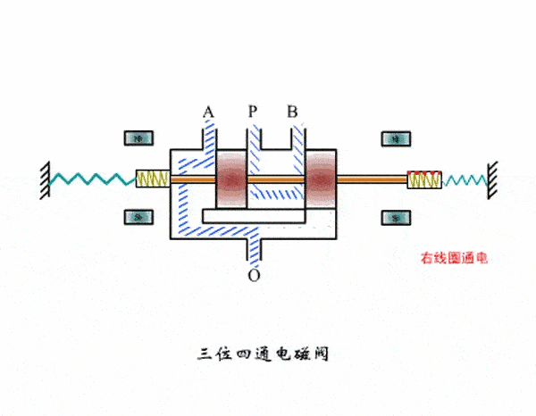
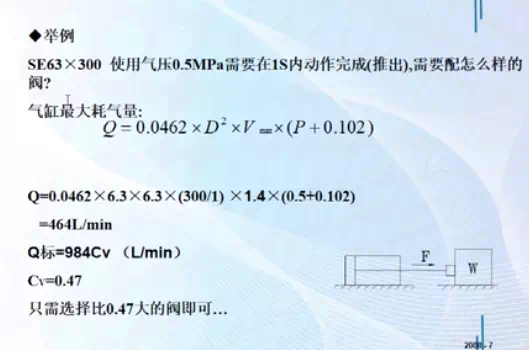
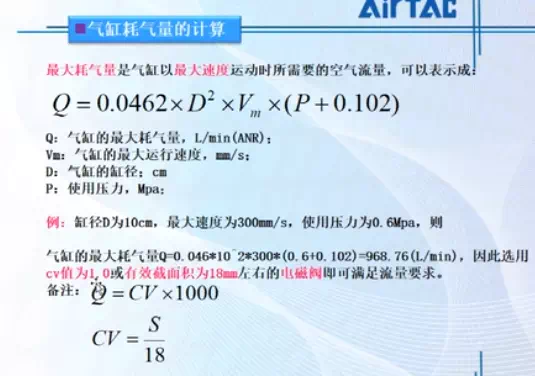

“二位阀“是指阀芯的状态只有两种 即’I开“和“关‘'；对应电气系统指单 个电磁阀线圈的带电和失电。
“三位阀“是指阀芯的状态有三种 即‘，开“、‘’关“和“中间位”；对于 电气系统是指两个线圈的配合使用的三种状态（1A得电B失电；2A失电B得电，3AB都失电）。
工厂最常用的电磁阀为二位二通电磁阀、二位三通电磁阀和三位四通电磁阀；
通常二位二通电磁阀包合一个线圈，PLC或者其他系统的一个输出点控制该线圈，即通电时打开或关闭，断电时没有动作，这种电磁阀在控制上只有一种运动，另一种运动需要机械条件配合，所以二位二通电磁阀多常见于安全阀系统。
假设有个两位说三通的气动电磁阀，此电磁阀只有开和关两种工作状态位，有三个气路，一个气源进气道和一个气源出气道，还有个排气道。一般用在单作用气缸， 假设气源从电磁阀气源口进，然后线圈得电气源从电磁 阀出口出去至单作用气缸，让后打开阀门。当线圈失电，电磁阀气源出口关闭，气缸另一侧通过弹簧复位关 闭阀门，气缸气室内的气体通过电磁阀排气口排除阀门关闭。
假设两位五通的气动电磁阀，工作位不变是两位，但是有五个气路，有气源口路，气源出口路交个，分别是执行机构开一个出口，执行机构关一个出口，同时还分别对应两个排气口。此电磁阀一般用于驱动双作用气缸，也就是它有两个气室，通过气源压力来达到阀门开或关的要求。
二位三通电磁阀也包含一个线圈，PLC或者其他系统的一个输出点控制这个线圈，即通电时打开或关闭，断电时动作相反；这种电磁阀适用于动作简单、反复运动的机械结构中，比如说单线圈控制的气缸等。
三位四通电磁阀包含两个线圈，PLC或者其他系统的两个输出点控制两个线圈，即一个线圈通电时打开或关闭，另一个线圈通电时动作正好相反，没有电磁阀输出则保持原态，两个线圈不可以同时通电；这种电磁阀适用于行程较大的机械结构中且需要位置传感器配合使用。







